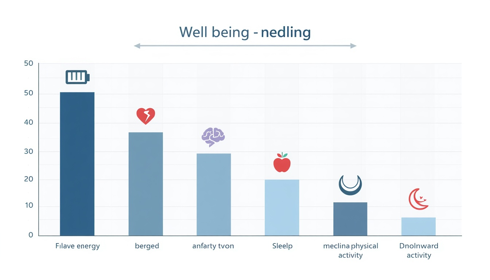
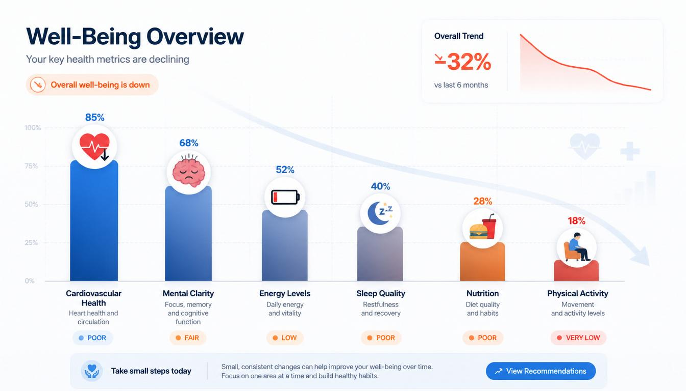
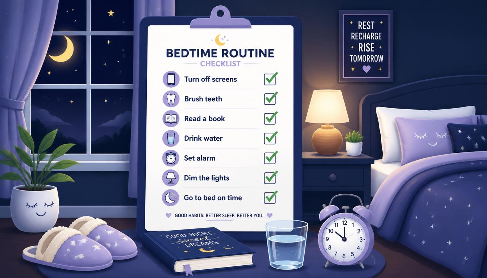

Sleep & Mental Wellbeing: The Overlooked Pillar of Student Health
Introduction
When people think about "good health," sleep rarely gets the same attention as diet or exercise — yet it underpins both. This page looks specifically at how sleep quality affects mental wellbeing for students, and what realistic changes can improve it, without needing any special equipment or cost.
Why Sleep Matters
During sleep, the brain consolidates memories formed during the day, clears metabolic waste products, and regulates hormones linked to stress and appetite. For students, this directly affects how well information from lectures and revision is retained the next day.
The Student Context
Irregular class schedules, part-time work, and late-night study sessions make consistent sleep difficult. Many students underestimate how much a short-term "all-nighter" before an exam can actually reduce next-day recall and problem-solving ability.

Effects of Poor Sleep on Mental Wellbeing
- Mood regulation: Sleep-deprived individuals report higher irritability and lower resilience to everyday stress.
- Concentration: Reaction time and sustained attention both decline noticeably after just one night of reduced sleep.
- Long-term risk: Chronic poor sleep is associated with a higher likelihood of anxiety and low mood over time.

Practical Tips for Better Sleep
Before Bed
Reducing screen brightness and avoiding caffeine in the evening are two of the most effective, zero-cost changes a student can make.
Building a Routine
Going to bed and waking up at roughly the same time — even on weekends — helps stabilise the body's internal clock far more effectively than occasional long "catch-up" sleep.

Support & Resources
If sleep difficulties are affecting daily life or mood for an extended period, speaking with a GP or a university wellbeing service is a reasonable and encouraged next step — persistent sleep problems are common and treatable, not a personal failing.
Visit our Feedback & Programme Directory page for local initiatives connected to student wellbeing.